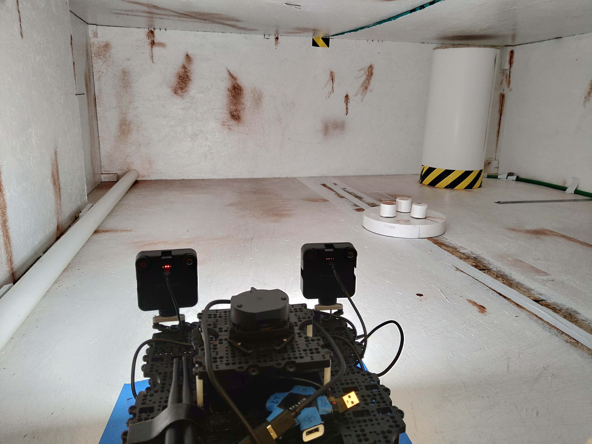
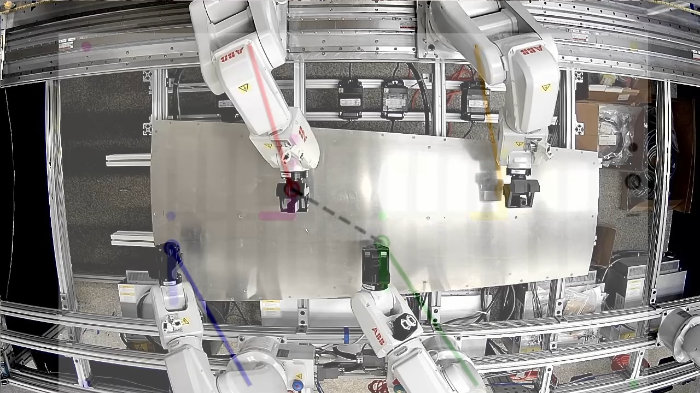
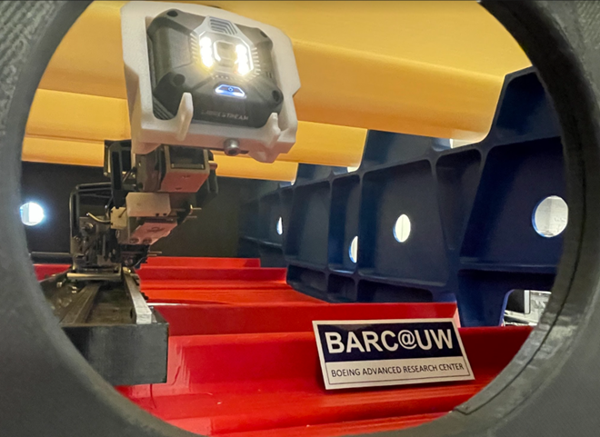

PhD student in robotics. Interested in applying control techniques and advanced math concepts to various robotic applications. Also obsessed with cutting edge technologies in general. My current research goal is to develope a robotic immune system to perform autonomous inspection for large confined structures.
Research Interest: Control and Estimation, Swarm System, Reinforcement Learning, Extended Reality
Funded Projects
- Ballast Tank Inspection

- Machine Supervisory Control

A SCADA system for coordinating multiple machines in a manufacturing cell and high level decision making, also provides GUI for operator and communication to on demand cloud computing service. - Mechanic In-Tank Tool

A cable-controlled arm designed to inspect a confined wing tank with flammable fume.Patent pending https://patents.google.com/patent/EP4074464A1/
- Variable Impedance Robotic Gripper

Senior capstone project. A gripper that passively increases stiffness as the gripping force increase similar to human's fingers.
Personal Projects
Publications
-
Wong, B., Paine, T. M., Devasia, S., & Banerjee, A. G. (2023).
Active Anomaly Detection in Confined Spaces Using Ergodic Traversal of Directed Region Graphs.
ArXiv.Org.
https://doi.org/10.48550/arxiv.2310.00588 - Wong, B., Marquette, W., Bykov, N., Paine, T. M., & Banerjee, A. G. (2023).
Human-assisted robotic detection of foreign object debris inside confined spaces of marine vessels using probabilistic mapping.
Robotics and Autonomous Systems, 161, 104349-.
https://doi.org/10.1016/j.robot.2022.104349